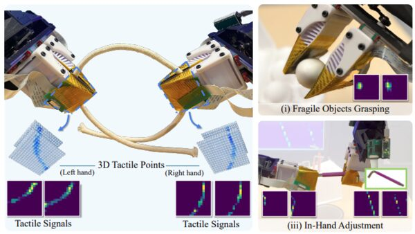

A guided tour of Awesome FlexiTac — what happens to a research field when a dense tactile sensor stops costing six hours and a thousand dollars, and starts costing three minutes and a few dollars.
Most tactile-sensing papers end with a working demo and a sensor nobody else ever builds. That was the problem I ran into in 2023, and the reason this post exists: the bottleneck in tactile robot learning was never really the algorithm — it was access.
Three years later there is a small ecosystem of work built on the same open, flexible, low-cost tactile sensor. Awesome FlexiTac is the list. This post is the map: how the line started, which questions split off from it, who is working on what, and which branches are still wide open.
The science already existed. MIT's scalable tactile glove — 548 sensors on a knitted glove, Nature 2019 — identified objects from recorded human grasps, offline.[1] Whether a policy could close a control loop on that signal is a different question, and in 2023 answering it began with a purchase order rather than an experiment.
There were three channels. Commercial research systems sold a calibrated array for roughly $1,000, but not its geometry. Factories were cheap in stock shapes and quoted me about $6,000 of non-recurring engineering per custom design. Academic prototypes moved by request — sometimes unavailable, sometimes licensed — leaving a hand rebuild of the 2019 glove at about 6 hours per sensor. Each is optimised, correctly, for a customer who is not an iterating robot-learning lab. Iteration was nobody's product.
So I went back to the physics: a resistive sandwich — polyimide film, adhesive, a force-sensitive resistive layer, and conductive traces crossing in a grid, with each crossing acting as one 3 mm² pressure unit. No cleanroom, no exotic materials. What was missing was iteration on manufacturability, which is not a publishable result. The gap was supply, not science.
Two versions matter for reading the rest of this map, because papers in the tree below build on one or the other.
| FlexiTac V1 | FlexiTac V2 | |
|---|---|---|
| Fabrication | ~30 min, hand-made in lab | ~3 min assembly |
| Cost | ~$5 / piece | $4.19 / piece (20 units) $1.36 / piece (1,000 units) |
| Customization | Cut and layer by hand | Change the PCB file, reorder |
| Lead time | ~30 min, in-lab | < 1 week, manufacture + ship |
| Used by | 3D-ViTac, Intelligent-Carpet-era work | Touch in the Wild, VT-Refine, and most 2026 works |
The honest chronology matters here, so let me state it plainly: the sensor existed as a lab artifact for roughly two years before it existed as a release. 3D-ViTac (CoRL 2024) ran on hand-built V1 pads. The FlexiTac hardware paper and open-source release came later, once V2 made the thing reproducible by someone who is not me.[2] The research came first and the product came second, which is the opposite of how these stories are usually told.
This is where the research line starts, and it is why this map begins at 3D-ViTac (CoRL 2024) rather than at the earlier glove and carpet work.[3] Prior dense-tactile papers asked what can we infer from touch? 3D-ViTac asked the harder question: does adding touch make a manipulation policy better?
The uncomfortable early finding — one worth stating because it is easy to hide — is that naively adding tactile input often makes policies worse. The two signals are structurally mismatched. Vision is high-dimensional and global; touch is low-dimensional and local. Concatenate a 16×16 pressure array onto a visual embedding and the network learns to ignore it, or worse, overfits to it.
3D-ViTac's answer was to stop treating touch as a separate modality and put it in the same geometric space as vision: project each active taxel into 3D as a colored point, and hand the policy a single unified visuo-tactile point cloud. Tactile readings become part of the scene rather than a side-channel. A PointNet++ encoder and a diffusion policy consume the merged cloud.

If touch has to be fused rather than appended, where in the stack should fusion happen? Two families have emerged from this line, and they make genuinely different bets.
Vision-language-action models ride on internet-scale image and text data. There is no internet of touch. Every tactile frame that exists was collected by someone with a sensor on a robot — which, before the cost collapse in Figure 1, meant almost no frames existed at all.
Touch in the Wild (NeurIPS 2025) attacks this on the hardware side: take the robot out of the loop entirely.[4] A hand-held gripper with a fish-eye camera, two FlexiTac pads, and a 23 Hz reading board, carried around by a person. No robot, no lab, no calibration rig. That produced 2,700+ videos across 43 manipulation tasks — hardware stores, kitchens, student lounges, a Chipotle, campus outdoors — which then pre-trains the cross-attention encoder from Figure 4B before fine-tuning on a small number of robot demos.
Portable capture scales coverage — many tasks, many scenes. It does not scale precision. For tight-tolerance contact-rich tasks, like inserting a peg into a hole with sub-millimetre clearance, human demonstrations give you one narrow band of trajectories and no exploration around failure. Thirty real demos is simply not enough: the pre-trained policy stalls, misaligns, and cannot recover.
VT-Refine
(CoRL 2025, with NVIDIA Robotics) closes that gap by going real → sim → real.[5]
The trick that makes it work is that this sensor is unusually easy to simulate. A piezoresistive array
measures normal force at known grid positions, so a Kelvin–Voigt contact model —
f_n = −(k_n·d + k_d·ḋ)·n, a spring-damper on penetration depth and velocity — reproduces the
signal well enough to train on, and it runs GPU-parallel across thousands of environments.
Compare that to rendering a gel deformation image per frame.
The result is the strongest quantitative argument in this whole line of work, and it is worth reading carefully, because it says two things at once.
Here is the whole map in one figure. The organizing principle is not the category taxonomy on the Awesome FlexiTac site — it is the story above. Three pillars are the questions asked in sequence; five branches are the directions the community took them; the roots are the prior work the sensor descends from; neighbors are independent groups building comparable sensors.
Hit Play the story to watch it assemble in narrative order, or click any node for what it contributed and what it inherited.
Fusion & representation is the most crowded branch, and it has moved from "does touch help" to "how do you route it." Policy Consensus composes separate per-modality diffusion policies rather than fusing features; ViTaS keeps one encoder but replaces alignment-then-concatenation with a soft-fusion contrastive objective; TacVLA pushes contact-aware tactile tokens into a VLA; FELT goes the other way and generates tactile signals from vision, which is an interesting attack on the data problem — if it works, you do not need the sensor at inference time. Object Pose treats touch as the observation for state estimation rather than control. Deform360 turns the whole thing into a dataset for deformable world models. TactX is the outlier: it attacks the representation itself, training resistive, magnetic and vision-based touch into one shared latent so a policy can cross sensors.
New bodies is the branch I did not predict. Once a tactile pad is a PCB file, people put it where they need it: an active palm that participates in dexterous manipulation (npj Robotics 2026), a force-controlled low-cost gripper, a fingertip-plus-palm in-hand system, and — least obviously — the feet and shins of quadrupeds for loco-manipulation. Two independent groups converged on tactile quadrupeds within a year.
Out of the lab is the two Analog Devices pieces. I include them not as papers but as market signal: a semiconductor company now ships a tactile part built on standard fab processes, claiming roughly 5× human-fingertip resolution. That is the strongest available evidence that this sensing family is not a research curiosity — and also a warning that the academic version has a limited window to matter.
A frame that only lists strengths is a sales pitch. Piezoresistive arrays have real, structural limitations, and being precise about them is how you tell which of the branches above will hold up.
| Limitation | What it costs you | Use instead |
|---|---|---|
| Normal force only | No shear measurement, so no direct incipient-slip detection. You infer slip from pressure-pattern change over time, which is late. | Optical (GelSight-class) or magnetic (ReSkin-class) skins |
| Drift and hysteresis | Force-sensitive film is not a load cell. Absolute-force claims need per-pad calibration and re-zeroing; relative contact patterns are far more trustworthy. | Load cells / F-T sensors for absolute force |
| Coarse spatial resolution | ~3 mm² per taxel. Fine texture and surface geometry are below the sampling limit. | Optical tactile for texture and fine geometry |
| Row–column crosstalk | Multi-contact scenes on a shared grid can ghost. Matters more as arrays get larger. | Per-taxel addressed arrays |
These are the gaps I see from inside the tree. They are numbered so they can be pointed at.
Geometric fusion needs calibration; attention-based fusion needs data. Nobody has shown one method that dominates across fixed-rig precision tasks and un-calibrated in-the-wild capture. A fair head-to-head on a shared benchmark does not exist.
Can incipient slip be recovered from dense normal-pressure sequences alone, quickly enough to act on? If yes, most of the limitation table above softens.
This was the flattest "nobody has tried" on the list, and TactX has since gone at it directly: paired contacts train resistive, magnetic and vision-based encoders into one shared latent, and a policy learned on one sensor runs zero-shot on physically different ones. That is the first real counter-example to "tactile has no equivalent of just resize the image." What remains open is whether it holds across geometries rather than modalities — a shared latent for two different pad layouts on two different fingers — and whether it survives a hardware revision, which is the case that decides if tactile data outlives the sensor that produced it.
Kelvin–Voigt is a good first model, but no one has systematically characterised where it breaks —
soft objects, rolling contact, adhesion, high-speed impact — or calibrated k_n, k_d
from real data at scale.
The quadruped work is the leading edge and it is two papers. Large-area, many-thousand-taxel skins raise scaling questions — bandwidth, crosstalk, representation — that fingertip work never has to answer.
2,700 in-the-wild videos is a real dataset; it is not ImageNet. There is no released tactile encoder that other groups load by default the way they load CLIP. Until there is, every project pays the representation cost again.
Success rate on a bespoke assembly task is not comparable across papers. The field needs shared contact-rich benchmarks with a mandated vision-only baseline — otherwise "touch helps" is unfalsifiable.
The thesis of this whole post is that access changes what gets researched. So here is the shortest path from reading this to having tactile data on your own robot.
If you get stuck, the fabrication guide lists a contact address and the project has a Discord. The point of open-sourcing this was never the paper — it was to stop sourcing a sensor from being the part of the project that costs a semester.
Below is the live Awesome FlexiTac gallery, embedded. Filter by category, click through to per-paper pages with abstracts and links. If you have a relevant work — whether or not it uses FlexiTac — open a PR and it goes on the list.
@misc{huang2026flexitacmap,
title = {Making Touch Cheap: How One Open Tactile Sensor Grew a Research Tree},
author = {Huang, Binghao},
year = {2026},
note = {Blog post},
url = {https://binghao-huang.github.io/blog/posts/2026-08-12-awesome-flexitac.html}
}
@article{huang2026flexitac,
title = {FlexiTac: An Open-Source, Scalable Tactile Solution for Robotic Systems},
author = {Huang, Binghao and Li, Yunzhu},
journal = {arXiv preprint arXiv:2604.28156},
year = {2026}
}